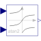

Atan2Output atan(u1/u2) of the inputs u1 and u2 |

|
Information
This information is part of the Modelica Standard Library maintained by the Modelica Association.
This blocks computes the output y as the tangent-inverse of the input u1 divided by input u2:
y = atan2( u1, u2 );
u1 and u2 shall not be zero at the same time instant. Atan2 uses the sign of u1 and u2 in order to construct the solution in the range -180 deg ≤ y ≤ 180 deg, whereas block Atan gives a solution in the range -90 deg ≤ y ≤ 90 deg.

Connectors (3)
| u1 |
Type: RealInput Description: Connector of Real input signal 1 |
|
|---|---|---|
| u2 |
Type: RealInput Description: Connector of Real input signal 2 |
|
| y |
Type: RealOutput Description: Connector of Real output signal |